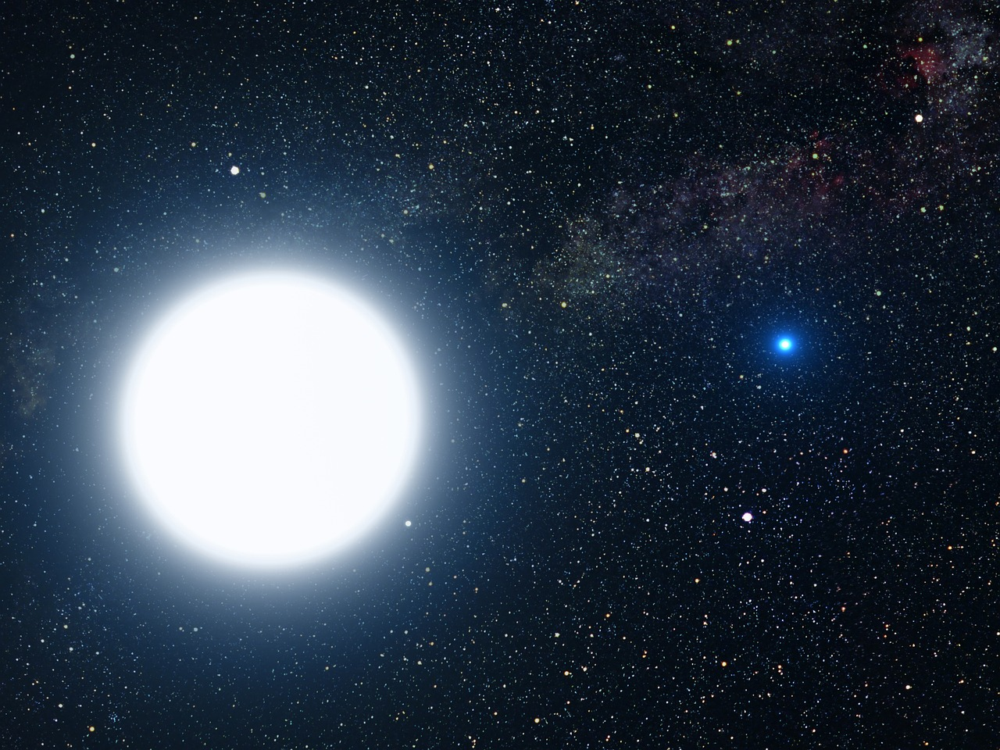
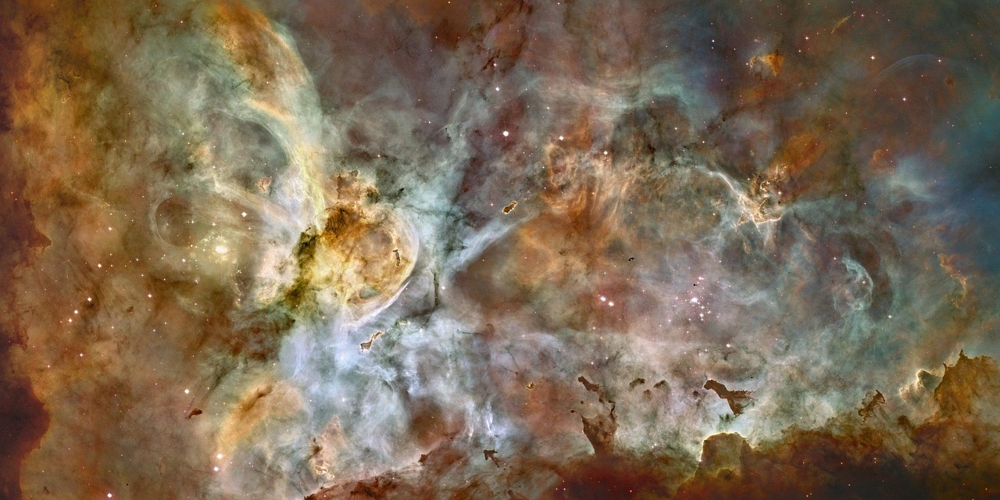

Buracos Negros
Conheça o horizonte de eventos, discos de acreção e os impressionantes jatos relativísticos.
Explorar →Explore fenômenos cósmicos fascinantes, conheça algumas das maiores estrelas já observadas e descubra estruturas que ajudam a contar a história do universo.
Começar exploração
Este projeto reúne páginas temáticas sobre astronomia utilizando HTML, CSS e JavaScript. Cada seção apresenta imagens, informações e recursos interativos para tornar a navegação mais interessante.
Conheça o horizonte de eventos, discos de acreção e os impressionantes jatos relativísticos.
Explorar →
Descubra nuvens cósmicas de gás e poeira que participam da formação e evolução das estrelas.
Explorar →
Veja alguns dos maiores objetos estelares conhecidos e compare suas dimensões impressionantes.
Explorar →O Explorando o Espaço foi desenvolvido como projeto de prática em desenvolvimento web, trabalhando estrutura semântica, responsividade, navegação entre páginas, manipulação do DOM e interação com imagens.